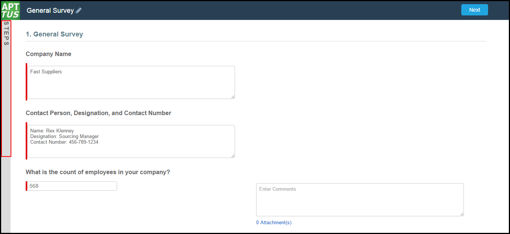
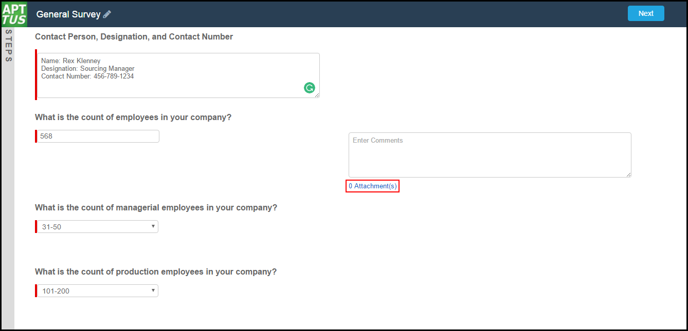

Surveys are in a form of a questionnaire which will help the buyer to receive information. You, as a supplier, will fill the surveys at the time of onboarding and when a buyer will assign you a survey. You must fill the surveys within the mentioned deadline.
Now, you can preview the steps of your surveys using the Preview Sidebar. You can use the Preview Sidebar to:
Preview a future step in the Wizard.
Track overall completion progress.
Return to a previous step in the Wizard to complete responses or correct a mistake.
View a full preview of all completed responses.
Tip:
Use Case
Edward Jones is a microphone supplier and he fills up the survey.
<image>
To fill up a survey
Click on the link that you have received in your email. You will be redirected to the Survey page.
Respond to the questions by selecting the appropriate responses.
Note:
Partially completed questions are saved automatically. When the user partially completes a survey, closes it, and re-opens the survey, they will be redirected to the last page that they had completed with all of the previously completed questions populated.
The runtime wizard displays the Preview Sidebar in collapsed view. Click on the Preview Sidebar to expand it. Click the
icon to collapse the Preview Sidebar. 
Click on any sidebar step to preview it. You will see one of two possible views:
If you are running a linear, step-by-step Wizard with no conditionally-shown steps, you will be able to see and navigate to any step in the Wizard.
If the Wizard you are running contains any conditional steps, you will only see the current step and the "Preview" step. The preview sidebar will display additional steps as you complete the current step and conditions are satisfied to include the other steps in the Wizard.
Some Wizard steps may include the option to add comments and/or attachments in addition to providing traditional responses. You can add comments in the text area provided (500 character limit), and/or click Attach Files to attach files to the Wizard step. When you use the Wizard to create a record, the attached files are added to the Notes & Attachments Related List of the new record along with the recorded comments. To add an attachment:
Click the Attachment(s) link below the Comments box. The Manage Attachments window is displayed.

Click Add Files. Browse for a file on your machine and add it as an attachment. The attachment uploads to the Wizard and displays in the Manage Attachments window.
Repeat the previous step for each attachment you want to add. Close the window when you are finished adding attachments.
Click Save to save the survey.
-or-
Click Submit to the Buyer to submit the survey to your buyer.